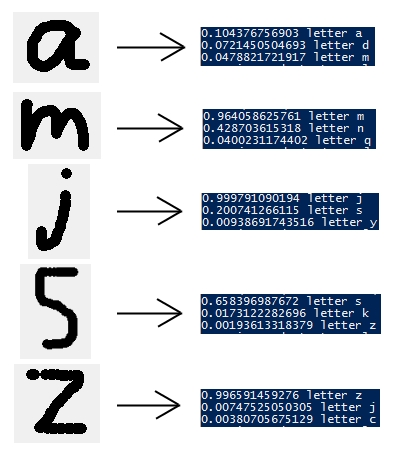

I began the project by building a neural network engine from scratch. I referred to this tutorial which was invaluable in understanding the basics of neural networks. The engine that I ultimately created can have any number of input nodes, hidden layer nodes, and output nodes. The engine inputs data into the network, checks the error, and uses this to backpropogate. Once you have trained a network, the engine can save it as a JSON file so that it can be loaded later. The entire project was written in python for speed and readability, and as a result some performance compromises were made; it takes a few days for this network to train on very large data sets.
I used my engine to create a program capable of recognizing handwritten characters. To collect data for training, I drew letters via a python program, which compressed them to 10x16 images and automatically saved them to their correct folder. All in all, I collected 30-50 samples for each letter -- over 1000 images in all. The network itself has 160 input nodes, 20 hidden layer nodes, and 26 outputs (one for each character). After training the network and reducing the error as much as possible, it was able to identify letters correctly a large majority of the time.
Here are some examples of letters identified by my neural network. The blue writing on the right -- the network's output -- shows which letters are the best matches. The decimal number is the likelihood from 0 to 1 (one being highest) that the letter is a match.
